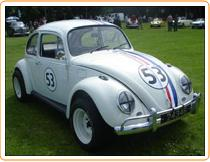
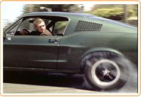
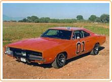
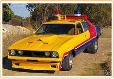
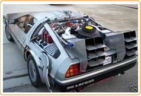

The Love Bug (Herbie)
Herbie,  the Volkswagen Beetle with human characteristics, originally featured in the 1968 Walt Disney comedy film Love Bug.
Among other anthrophomorphic characteristics, Herbie appears to have a mind of his own, and does not need a driver: he can drive on his own (and oftern does).
Herbie is distinguished by the number 53 on his front bonnet, trunk and doors, as well as three red, white and blue stripes, and a California number plate reading OFP 857.
Herbie also features in (among others) Herbie Rides Again, Herbie Goes to Monte Carlo and Herbie Goes Bananas, all produced by Walt Disney.
Bullitt (Ford Mustang)
Bullitt is an American film staring Steve McQueen, Jacqueline Bissett and Robert Vaughn, which was released in 1968 and distributed by Warner Brothers. 
The film is characterized by some brilliant acting by McQueen, and of course the the amazing and iconic car chase.
This scene, which lasted just less than eleven minutes and featured Dective Bullitt, (played by Steve McQueen) in his Ford Mustang, is considered one of the most exciting car chases in the history of the movies.
It set the standards for and defined the car chase for all subsequent Holywood films, such as The French Connection (with Gene Hackman).
Dukes of Hazard (Dodge Charger)
In the television series,  the Dukes of Hazard, The General Lee is the Dodge Charger 1969 two-door coupe driven by characters Bo and Luke Duke.
The series is well known for the amazing car chases and stunts. The Dodge Charger had the doors welded shut, leaving the Dukes to climb in and out through the windows.
The car's name is a reference to the Confederate General Robert E. Lee, and the vehicle brandishes the Confederate naval jack postitioned on the roof.
Another trademark is the horn, which plays the tune from the first line of the song "Dixie".
Mad Max (Ford Falcon XB)
Mad Max,  is a 1969 Australian film directed by George Miller, and which shot the the relatively unknown Mel Gibson to stardom.
Mad Max is set in sometime in the future, where society has begun to break down. Seeking revenge for the death of his wife and young daughter by the motorcycle Toecutter gang, Mad Max (Mel Gibson) gives pursuit in his supercharged Ford Falcon XB (or Pursuit Machine).
The ending is memorable, where Mad Max handcuffs one of the gang to a burnt out highjacked car, sets a crude time-delayed fire bomb, throws the gang member a hacksaw, and then driving off into the night. The gang member is thus faced with the choice of sawing through the handcuffs (which may be too late) or sawing through his ankle (which will definitely save his life). The movie does not revel the choice the gang member makes.
Back To The Future (Modified DeLorean)
Back To The Future,  ia an American science fiction movie produced by Stephen Spielberg.
It stars Michael J. Fox as as Marty McFly, a teenager who accidently travels back in time to 1955, and features a retro-fitted DeLorean sports car as a time-travel machine.
Ronald Regan produced the following memorable quote in a State of the Union Address:
"Never has there been a more exciting time to be alive, a time of rousing wonder and heroic achievement. As they said in the film Back to the Future, 'Where we're going, we don't need roads' ".
Chris Droney said that this should be adopted as a motto for Javascript.